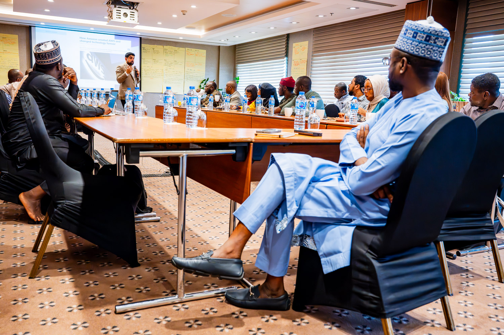
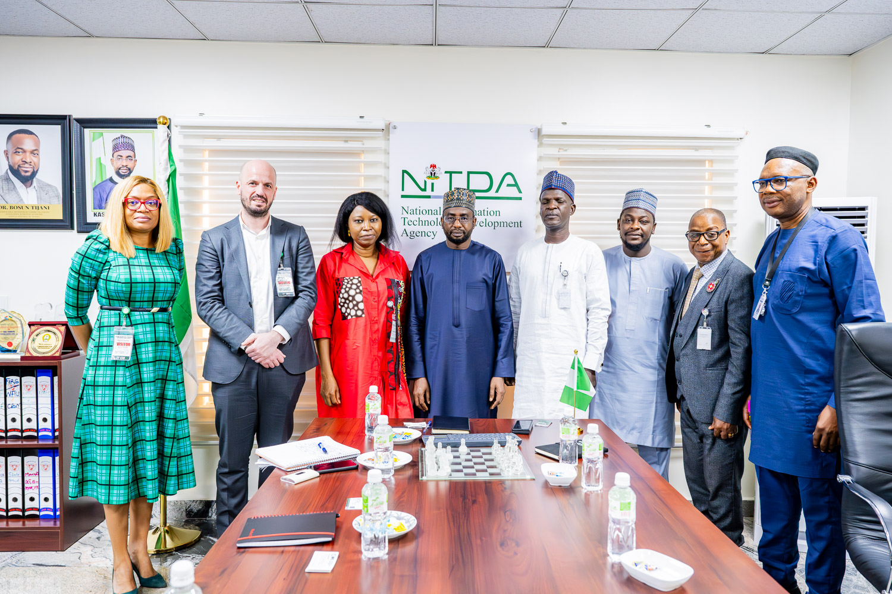
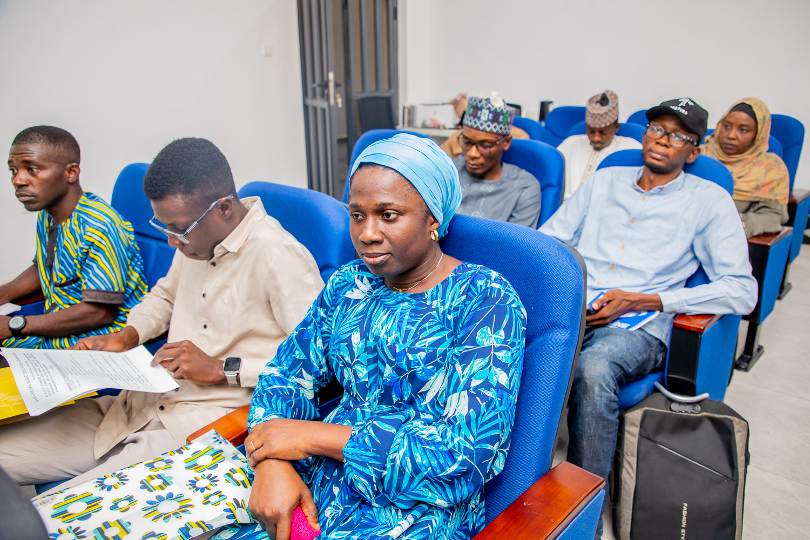

Our Organization
The National Information Technology Development Agency operates through its management team, departments and specialized units to implement policies and programmes that support Nigeria's digital transformation.
These departments and units work together to promote innovation, digital development, cybersecurity, e-government services, research and the effective use of information technology across Nigeria.
Management Team
NITDA is led by a team of professionals responsible for overseeing the Agency's departments, programmes and strategic initiatives.

Kashifu Inuwa Abdullahi, CCIE
Director-General / Chief Executive Officer

Team
POSITION / DEPARTMENT

Team
POSITION / DEPARTMENT

Team
POSITION / DEPARTMENT
Departments and Units
NITDA operates through various departments and specialized units. Each contributes to the Agency's mandate and Nigeria's digital transformation.
CyberSecurity Department
The department supports the protection of Nigeria's digital environment by promoting cybersecurity awareness, strengthening digital trust and supporting measures for securing information systems.
Digital Development Services
This department supports the development and adoption of digital technologies and services that contribute to Nigeria's digital transformation.
Human Resource Management
The department supports staff administration, workforce development, capacity building and effective management of the Agency's human resources.
Research and Development
This department promotes technology research, innovation and initiatives that contribute to the development of Nigeria's information technology ecosystem.
Specialized Units and Their Activities
NITDA has specialized units that perform specific functions in support of the Agency's mandate and operations.
Legal Unit
The Legal Unit provides legal support and guidance to the Agency. It assists with legal documentation, agreements, regulatory matters and other legal responsibilities of NITDA.
SERVICOM Unit
The SERVICOM Unit promotes effective service delivery and helps ensure that services provided by the Agency meet appropriate standards and the needs of the public.
Procurement Unit
The Procurement Unit coordinates the acquisition of goods, works and services required by the Agency while supporting proper procurement procedures and processes.
Computer Emergency Readiness & Response Team
The unit supports cybersecurity incident response, promotes cybersecurity awareness and assists in protecting information systems against digital threats and vulnerabilities.